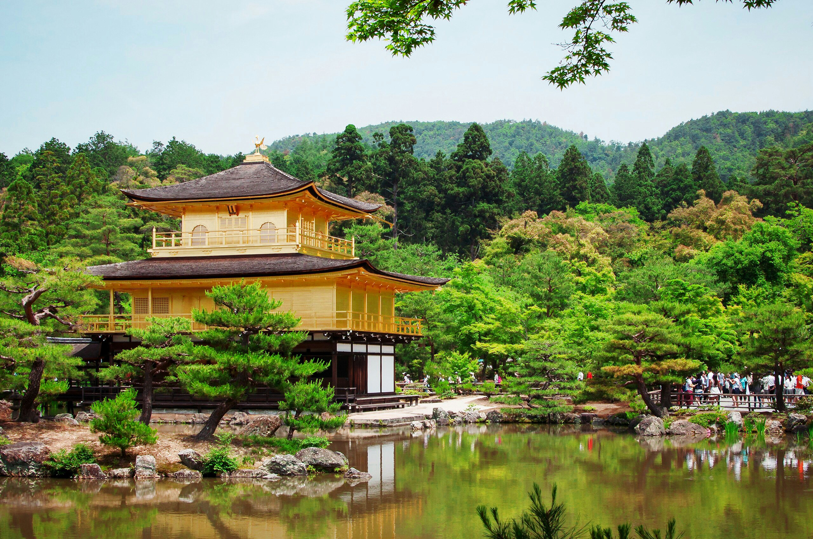

Fushimi Inari-Taisha
[Kyoto]

Der Fushimi Inari-Taisha ist einer der bekanntesten Schreine Japans
und besonders für seine endlosen, leuchtend roten Torii-Tore
bekannt. Diese Tore bilden beeindruckende Tunnel, die den Berg Inari
hinaufführen. Der Schrein ist dem Shinto-Gott Inari gewidmet, der
als Schutzpatron der Reisbauern und Kaufleute gilt. Ein Spaziergang
durch die Torii ist ein einzigartiges Erlebnis, besonders bei
Sonnenaufgang oder Sonnenuntergang, wenn das Licht durch die roten
Bögen fällt. Der Weg führt auf den Berg Inari, wo
kleinere Schreine und Statuen von Füchsen, den Boten des
Inari-Gottes, zu sehen sind. Der Aufstieg dauert etwa zwei Stunden,
bietet aber wunderschöne Aussichten über Kyoto. Viele
Besucher hinterlassen kleine Torii als Spende oder Gebet. In der
Nähe gibt es auch traditionelle Teehäuser und Stände,
die regionale Spezialitäten wie Inari-Sushi anbieten. Wer sich
für japanische Spiritualität und Kultur interessiert, sollte
diesen Ort unbedingt besuchen.
Mount Fuji
[Tokyo]

Der Mount Fuji ist mit 3.776 Metern der höchste Berg Japans und
ein weltweit bekanntes Symbol des Landes. Er ist sowohl ein aktiver
Vulkan als auch ein heiliger Ort in der japanischen Kultur. Besonders
im Sommer erklimmen zahlreiche Wanderer den Berg, um den
atemberaubenden Sonnenaufgang vom Gipfel aus zu erleben. Der Fuji ist
Teil des Fuji-Hakone-Izu-Nationalparks und kann von vielen Orten aus
bewundert werden, darunter die berühmten Fuji Five Lakes
(Fujigoko). Besonders beliebt ist der Kawaguchi-See, der bei klarem
Wetter eine perfekte Spiegelung des Berges im Wasser zeigt. Wer nicht
wandern möchte, kann den Berg von verschiedenen Aussichtspunkten,
wie der Chureito-Pagode oder Hakone, bewundern. Im Winter ist der
Gipfel mit Schnee bedeckt, was das klassische Bild von Fuji-san
prägt. Es gibt auch zahlreiche heiße Quellen (Onsen) in der
Umgebung, die eine perfekte Möglichkeit bieten, nach einer
anstrengenden Wanderung zu entspannen. Der Mount Fuji inspiriert seit
Jahrhunderten Künstler und Dichter und bleibt eine der
faszinierendsten Sehenswürdigkeiten Japans.
Kinkaku-ji
[Kyoto]

Der Kinkaku-ji, auch bekannt als Goldener Pavillon, ist eines der
berühmtesten Wahrzeichen Kyotos. Seine goldene Fassade spiegelt
sich malerisch im umgebenden Teich wider. Ursprünglich als Villa
für einen Shogun erbaut, wurde er später in einen Zen-Tempel
umgewandelt. Der Tempel ist von einem wunderschönen Garten
umgeben, der die Jahreszeiten auf besondere Weise widerspiegelt – im
Frühling blühen Kirschbäume, im Sommer leuchtet das
Grün, im Herbst färben sich die Blätter rot und im
Winter bietet der verschneite Pavillon eine traumhafte Kulisse. Der
Kinkaku-ji ist eines der bekanntesten Motive der japanischen Kultur
und zieht täglich viele Besucher an. Der dazugehörige Garten
ist im Stil der Muromachi-Ära gestaltet und bietet zahlreiche
kleine Brücken, Steine und Teiche, die eine harmonische
Atmosphäre schaffen. In der Nähe des Tempels gibt es
traditionelle Teehäuser, in denen man eine japanische
Teezeremonie erleben kann. Ein Besuch hier vermittelt einen Einblick
in die Ästhetik und Philosophie des Zen-Buddhismus.
Shibuya Crossing
[Tokyo]

Die Shibuya-Kreuzung ist eine der geschäftigsten Kreuzungen der
Welt. Hunderte von Menschen überqueren sie gleichzeitig aus allen
Richtungen. Umgeben von riesigen Bildschirmen, Geschäften und
Restaurants ist sie ein Symbol für das moderne, pulsierende
Tokio. Diese Kreuzung wird oft als "organisiertes Chaos" beschrieben,
denn trotz der großen Menschenmengen läuft alles geordnet
ab. Sie ist ein beliebtes Fotomotiv und in vielen Filmen und Serien zu
sehen. In unmittelbarer Nähe befindet sich die berühmte
Hachiko-Statue, die an den treuen Hund erinnert, der jahrelang auf
sein Herrchen wartete. Die Gegend rund um Shibuya ist ein Hotspot
für Shopping, Essen und Nachtleben. Zahlreiche Kaufhäuser,
trendige Boutiquen und Restaurants bieten alles, was das Herz begehrt.
Am Abend erstrahlt Shibuya in bunten Neonlichtern, die der Stadt ein
futuristisches Flair verleihen. Ein Besuch in einer der Sky-Bars in
den Hochhäusern rund um die Kreuzung bietet eine
spektakuläre Aussicht auf das Lichtermeer der Stadt.
Peace Memorial Park
[Hiroshima]
Der Hiroshima Peace Memorial Park erinnert an die Opfer des
Atombombenabwurfs von 1945. Das Herzstück des Parks ist der
Atombombendom, ein erhaltenes Gebäude aus der Explosion. Das
Friedensmuseum und zahlreiche Denkmäler laden zum Nachdenken und
Gedenken ein. Der Park wurde auf dem Epizentrum der Explosion
errichtet und soll ein Zeichen für Frieden und den Wunsch nach
einer atomwaffenfreien Welt setzen. Besucher können im Hiroshima
Peace Memorial Museum mehr über die Geschichte der Stadt und die
Auswirkungen der Bombe erfahren. Besonders bewegend sind die
persönlichen Geschichten der Überlebenden, die sogenannten
Hibakusha. Eine der bekanntesten Sehenswürdigkeiten im Park ist
die Kinder-Friedensstatue, inspiriert von Sadako Sasaki, einem
Mädchen, das nach der Explosion an Leukämie erkrankte und
tausend Papierkraniche faltete, um gesund zu werden. Jedes Jahr werden
hier neue Kraniche als Zeichen des Friedens niedergelegt. Der Park ist
ein emotionaler Ort, der Besucher zum Nachdenken anregt und die
Bedeutung des Friedens aufzeigt.